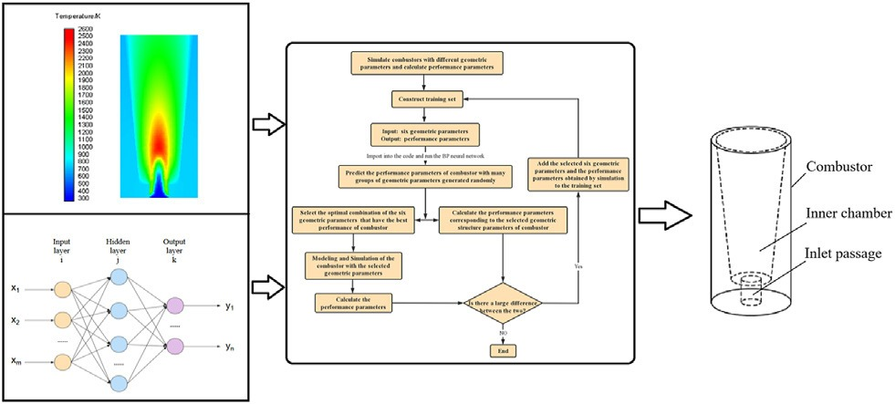

Featured research · International Journal of Hydrogen Energy, 2022
Machine learning meets combustor design
Numerical simulation and artificial neural networks are combined to optimize combustor geometry, improving radiation power from 24.8 W to 34.51 W with only 197 design samples.
Huang & Chen2022Reacting flows · AI
